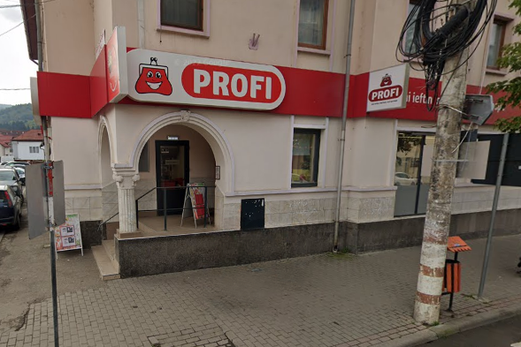
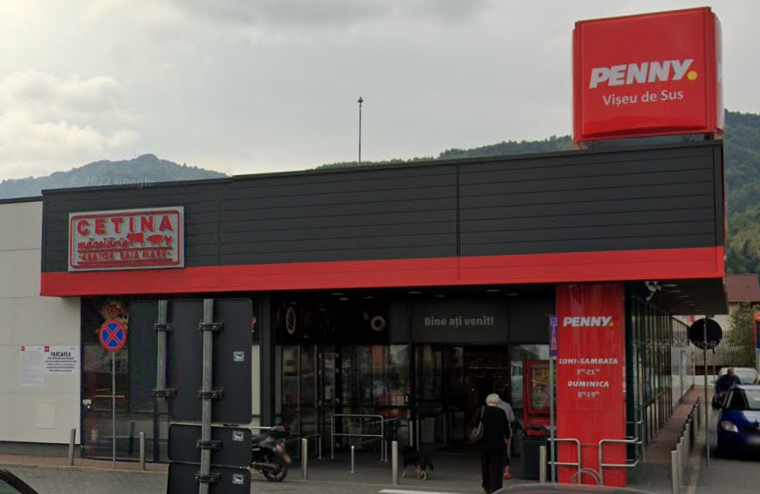

Bun venit!
Sunteți interesat de locuri de muncă în Vișeu? Pe acest site avem locuri de muncă pentru diverse domenii și calificări.
Locuri de muncă disponibile

Profi
Magazinul Profi din Vișeu de Sus este un supermarket modern,
care oferă o gamă variată de produse alimentare și de uz casnic.
Aici, clienții găsesc produse proaspete, de la fructe și legume la
carne și lactate, dar și articole de uz zilnic, la prețuri accesibile.
Magazinul este cunoscut pentru ofertele sale frecvente și pentru
atmosfera prietenoasă, fiind un loc convenabil pentru cumpărături de
zi cu zi.

Penny
Magazinul Penny din Vișeu de Sus este un supermarket accesibil,
unde locuitorii găsesc o selecție variată de produse alimentare,
articole de uz casnic și produse locale. Cu un accent pe prețuri
competitive și oferte săptămânale atractive, Penny este o destinație
populară pentru cumpărături rapide și economice. Atmosfera este
primitoare, iar magazinul este bine organizat, oferind o experiență
de cumpărături eficientă și plăcută.
Bessens
Firmă de betoane